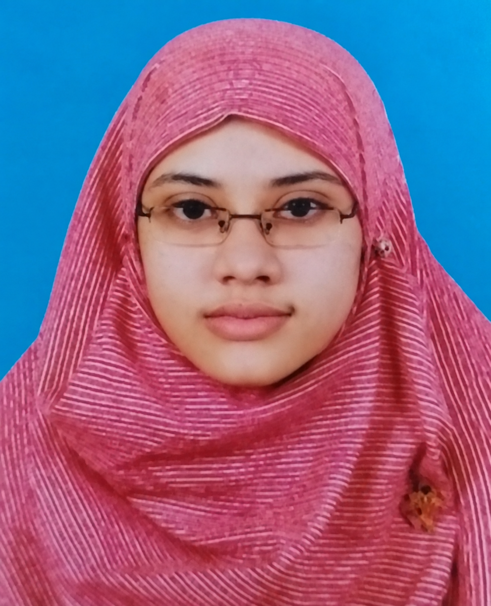

Shadeka Jannat
Adjunct Lecturer in Islamic Studies; PhD Candidate in Arabic
International Islamic University Chittagong & University of Chittagong, Bangladesh
Home/People/Research Fellows

Adjunct Lecturer in Islamic Studies; PhD Candidate in Arabic
International Islamic University Chittagong & University of Chittagong, Bangladesh

M.A. candidate in Sociology of Religion
Necmettin Erbakan University, Türkiye
Lecturer in Islamic Family Law, Qur’anic Sciences and Islamic Jurisprudence
Universitas Islam Negeri Sunan Gunung Djati Bandung, Indonesia
Lecturer; Executive Secretary
Islamic University of Minnesota, USA & Daaru Na‘im Academy for Islamic Sciences, Nigeria

Academic Researcher in Islamic Jurisprudence and Islamic Finance
Université Sidi Mohamed Ben Abdellah, Fès, Morocco

PhD Candidate
Yusuf Maitama Sule University, Kano, Nigeria